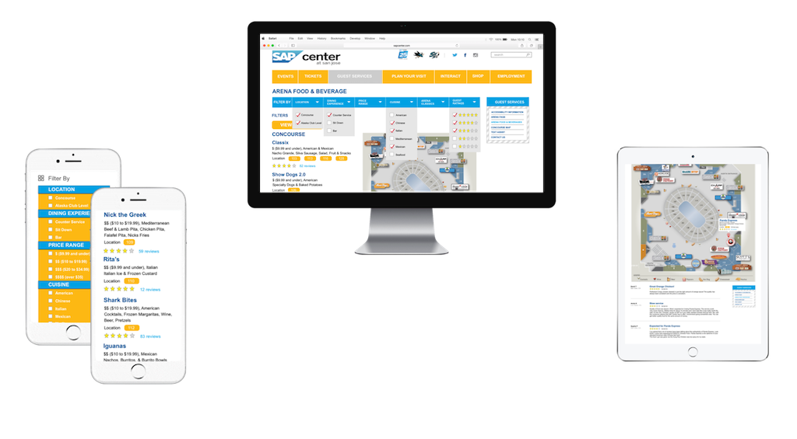

Improving SAP Center: Simplifying the decision to the question, “What do you want to eat?”
Digital Tools Used: Sketch, Principle for Mac, and Photoshop
The Problem
I’m a San Jose Sharks fan and whenever I’m home I find myself at SAP Center ready to cheer on the Sharks. Getting to the game is easy. The difficult part is when I get there. The decision process of deciding what to eat is always an elaborate dance. My brother and I will just wander around the stadium just looking for a place to eat.
Yet, we get tired of wandering. All we want to do is EAT! So, we end up just eating at the same exact hamburger place everytime. It’s not because it’s spectacular or reasonably priced. It’s because we know where it is and the quality we get.
The difficulty comes with not knowing what the stadium has to offer to eat. The strategy most people probably have is just wandering around the stadium until they find something that looks tasty. If you think about it the stadium is losing out on money with people not knowing what is there. Since if people don’t know their dining options how will they ever buy? There must be an easier way to find food to enjoy while watching the game.
Research
Before creating my own solution I wanted to see if my answers for an easier way to know what SAP Center has for dining options had already been solved. Naturally, I went to the SAP Center website. Easily found the page for “Arena Food and Beverage.” There are two PDFs for the two levels of the stadium that show a map and list of the different vendors, which you can see for yourself at this link.
On the desktop it looks alright. You can easily see the name of vendors and its location on the map. However, attendees are probably more likely to look at this website on their phone when they’re at the game! Attendees are busy with their own lives and deciding what to eat at SAP Center during their day to day activities is the last of their priorities. It’s when you’re at the crowded stadium starting to become a little hangry that you think about what you’re going to eat.
Looking at the “Arena Food and Beverage” page from the SAP Center website on your phone strains your eyes. Since the maps are PDFs users have to zoom in to the page just to clearly see the name of vendors and then horizontally scroll to attempt to find the vendor on the map. It’s not an efficient process. It’s tedious.
After using the website on my phone I thought maybe the SAP Center has an app! Well, they sort of do. But, it isn’t just called “SAP Center.” The app is called “San Jose Sharks + SAP Center,” which isn’t the greatest. Since in my personal opinion the SAP Center should have its own app, rather than have it be connected to the Sharks because what if you are at the SAP Center for a concert instead of a Sharks game. Also, the Sharks app didn’t even list the names of individual vendors. This brings up other problems. Yet, for the purposes of this case study even as a Sharks fan this app being connected to the SAP Center doesn't work for the target audience of guests attending any event at SAP Center.
Target Audience
Guests at SAP Center who are looking for food and drinks before or during the event.
Persona
Kim Johnson
Age: 43
Job: Interior Decorator
Mother of 3
“I try to always arrive with my family at SAP Center early to make sure each kid can find something they want or else I will get lots of complaints from them.”
Traits
- Light-hearted
- Kind
- Looks for good deals
Needs
- To find restaurants and places to eat more easily, especially if her kids want to eat different foods
- Tickets to her event were pricey and she wants to find food at the arena that meets her price range
- If a child wants a snack during the break she wants to be able to choose from places close to their seats
Concerns
- Overspending at the arena
- Quality of food with consideration to price
Needs to Feel
- Empowered as a consumer
- Happy to be at the event with her family
Designing Wireframes and User Testing
Once I figured out the type of content I wanted on the the Food and Beverages Page I hand drew how I wanted it to be laid out on the page. Once I hand drew the layout I created wireframes.
I first started out with basic sketches and then worked my way to drawing wireframes
I conducted user testing so I could see how users interacted with the layout and so I could receive feedback. Users suggested that I create a ratings filtering option. Users also suggested that there be a button that users can click to see promotions
For the map users suggested that when a user clicks on a restaurant and sees the map the map should say how far the user is from the restaurant.
A user even noticed that the list of cuisines wasn’t in alphabetical order as I intended because “Mexican” came before “Mediterranean.”
High Fidelty Prototypes
Through the research and feedback I received I created high fidelty prototypes by using Sketch and Principle For Mac.